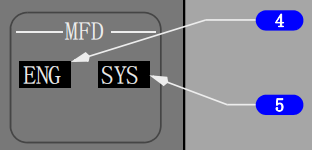
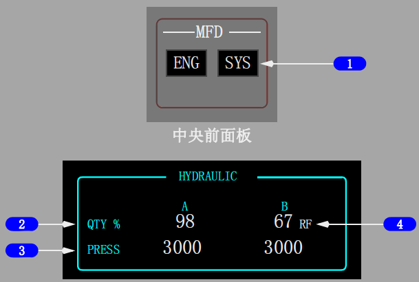
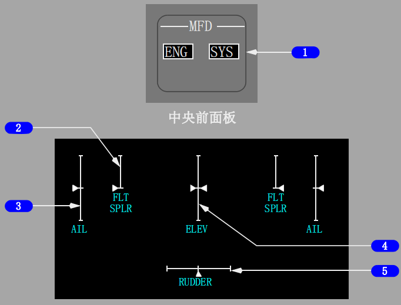
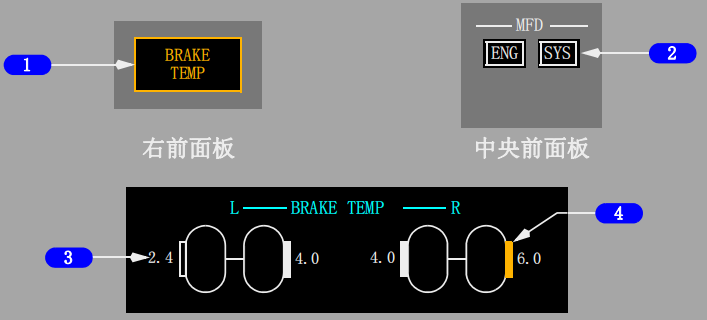
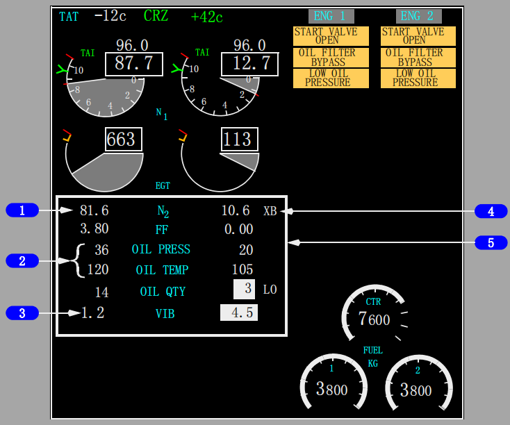

控制与指示:
返回面板

多功能显示器(MFD)发动机(ENG)电门
按压 - ENG
• 在下部显示组件(DU)上显示次要发动机指示；
或如果下部DU不可用，则根据显示选择面板选择器的位置，在上部或内侧DU上显示。
• 再次按压，使下部DU显示空白。

1 多功能显示器(MFD)系统(SYS)电门
按压- SYS
• 在下部DU上显示液压指示；或如果主面板DU电门在内侧多功能显示（INBD MFD）位置，则显示在内侧DU上。
• 再次按压可清除相关DU上的指示。
2 液压(HYDRAULIC)系统油量(QUANTITY)指示(白色)
显示液压油量的数字百分比（0%～106%）。
Note: 每个油箱上也显示液压油量。
3 液压(HYDRAULIC)系统压力(PRESSURE)指示(白色)
指示系统压力：
• 正常压力 - 3000 psi
• 最大压力 - 3500 psi。
Note: 当一个系统的两个泵都关闭（OFF）时，指示可能读取液压系统油箱压力，通常小于100psi。
4 加油(REFILL)指示(RF)(白色)
亮（白色）- 液压油量低于76%。
Note: 只有飞机在地面且两台发动机关车或在着陆之后襟翼收上滑行期间才能生效。

1 MFD系统(SYS)电门
按压--SYS
• 在下部显示组件上显示飞行操纵面位置；或如果主面板显示组件电门置于INDB MFD位置，则显示在内侧显示组件上。
• 再次按压可清除相应显示组件上的指示。
2 飞行扰流板(FLT SPLR)(白色)
指示相应(左/右)飞行扰流板位置：
• 顶部标记表示飞行扰流板完全展开
• 底部标记表示扰流板已向下收起。
• 显示4号和9号扰流板位置。
3 副翼(AIL)(白色)
指示相应的(左/右)副翼位置：
• 顶部标记表示最大向上位置
• 中央标记表示中立位置
• 底部标记表示最大向下位置。
4 升降舵(ELEV)(白色)
指示升降舵位置：
• 顶部标记表示最大向上位置
• 中央标记表示在地面且在绿区内配平时的中立位置
• 底部标记表示最大向下位置。
Note: 升降舵中立位置随安定面位置、襟翼位置和马赫数变化而变化。
中央指针标记是针对所谓起飞条件而设定的。在一定的机头上仰配平设置下，指针会稍有位移。
5 方向舵(白色)
指示方向舵位置：
• 左侧标记表示最大向左偏转位置
• 中间标记表示中立位置
• 右侧标记表示最大向右偏转位置。
Note: 方向舵的主偏航阻尼器和备用偏航阻尼器变化均显示在该指示器上。

1 刹车温度(BRAKE TEMP)指示灯
亮（琥珀色）-
• 一个或多个刹车的温度超出4.9
• 当显示组件不再指示热刹车情况时，灯熄灭。
2 多功能显示器(MFD)系统(SYS)电门
按压 - SYS
• 在下部DU上显示刹车温度指示；如果主面板（MAINPANEL）DU电门置于（INBD MFD）位，则显示在内侧DU上。
• 再次按压可清除相关DU上的指示。
3 刹车温度
指示机轮刹车温度的相对值
• 数值范围从0.0到9.9
• 显示（白色） - 正常刹车温度范围， 0.0 至 4.9
• 显示（琥珀色） - 刹车温度高, 超过 4.9。
4 刹车符号
显示（空白）-
指示任何小于2.5的刹车。
显示（实心白色）-
指示每个主起落架支柱上的最热刹车，范围在2.5至4.9之内。
显示（实心琥珀色） -
指示每个机轮上的刹车过热情况，范围在5.0至9.9之内。该符号一直显示，直至数值小于3.5。
系统说明:
紧凑型显示
在紧凑型显示格式下，主要和次要发动机指示合在同一显示器上。
N1和EGT指示与正常显示相同。其它所有指示仅显示数字读数。
如果超出限制，N2、滑油温度和滑油压力数字读数变为红色或琥珀色。
如果在飞行中发生过超限情况，则在地面发动机关车后，N2数字显示被红色方框框住。
当选择了次要发动机指示(人工或自动)且下部显示组件不可用时，主要和次要发动机指示以紧凑格式显示在上部显示组件上。
同样，如果上部显示组件不可用，紧凑型指示显示在下部显示组件上。
紧凑型发动机显示格式也可以通过按压发动机显示控制面板上的MFD ENG键加以选择。(选型)

1 N2 RPM指示
N2从圆盘式显示变为数字式显示。
如果在空中发生过超限情况，则在地面发动机关车后，数字显示被红色方框框起。
2 滑油压力(OIL PRESS)、滑油温度(OIL TEMP)指示
仅以数字式读数显示
如果超出限制，数字式读数显示琥珀色或红色。
3 振动(VIB)指示
仅以数字式读数显示。
4 交输引气起动(XB)指示
显示在N2的一侧
5 超限指示
当选择紧凑型显示时，如果发生超限情况，次要发动机参数周围出现矩形方框。
矩形框的轮廓为粗线并且闪烁10秒钟。10秒钟之后，矩形框轮廓变细并且不再闪烁。
外廓的颜色与超限的颜色一致 - 琥珀色、红色或白色。

如果显示紧凑型发动机格式，随后出现次要发动机参数超限时,次要发动机参数被一个长方形框围住。
在最初的10秒，方框的外廓显示为粗线并且框会闪烁。
10秒后，方框变为细线并且停止闪烁。
方框的颜色与超限的数字颜色相匹配：
琥珀色框对应琥珀色超限，红色框对应红色超限，白色框对应反显高亮指示超限。
一旦所有的超限情况消除，方框的外廓将会消失。
对于多重超限，方框颜色将与最严重的超限情况相匹配。
液压系统相关内容,见上方相应内部链接